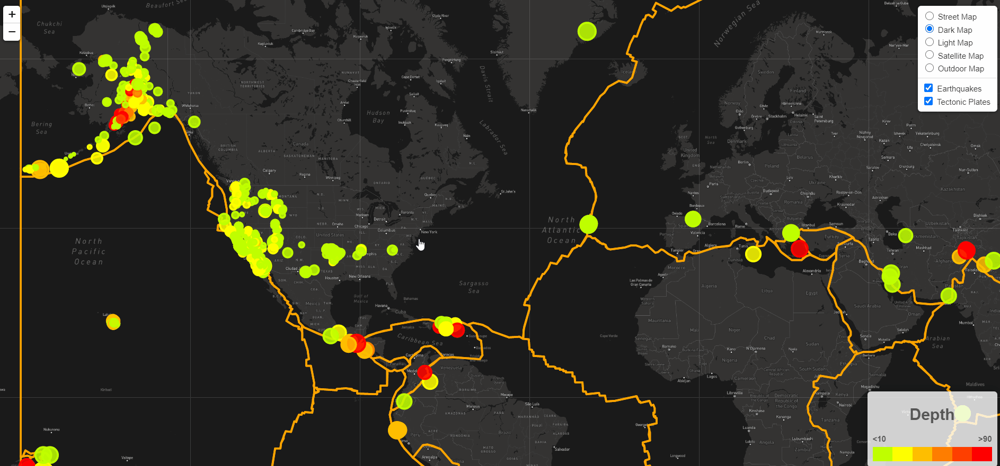

Background: The Purpose of this project is to build an
interactive map where the user can change the base layers and also add/remove overlay layers by using past 7 days of earthquake data. The earthquake data was obtained by using
USGS API and tectonic plates data was obtained from
Tectonics Plates Github Pages The USGS API gets updated every five minutes and has various earthquake data properties, but the main properties that will be used in this project are latitude, longitude, magnitude, depth and location.
Methods: The website with an interactive map was built by using html, css, js along with d3, Leaflet and Mapbox libraries. D3 library was used to analyze the JSON objects from API. Leaflet and Mapbox libraries were used to plot the interactive map.
<Preview>
